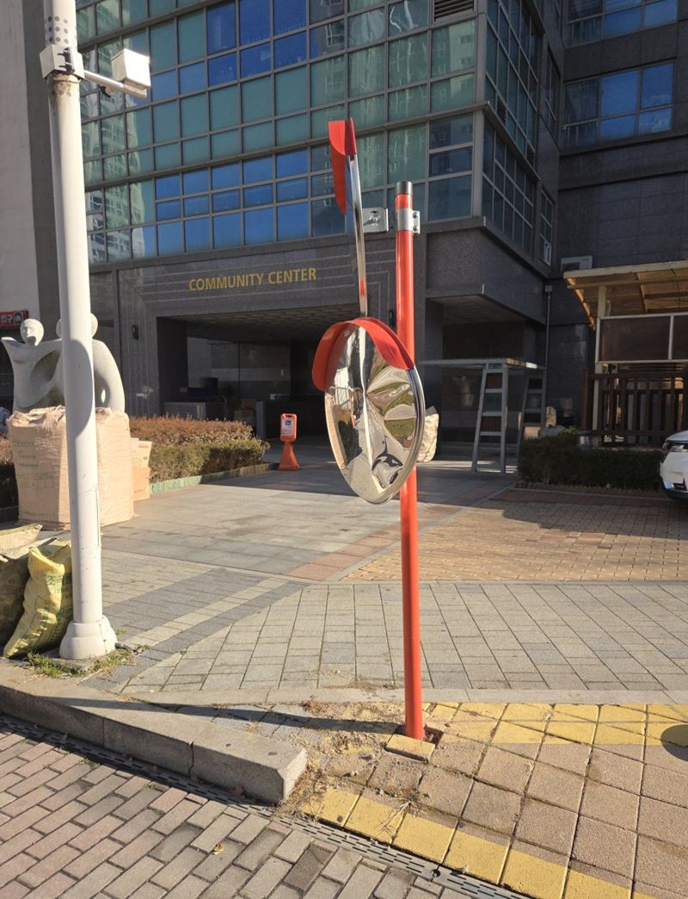
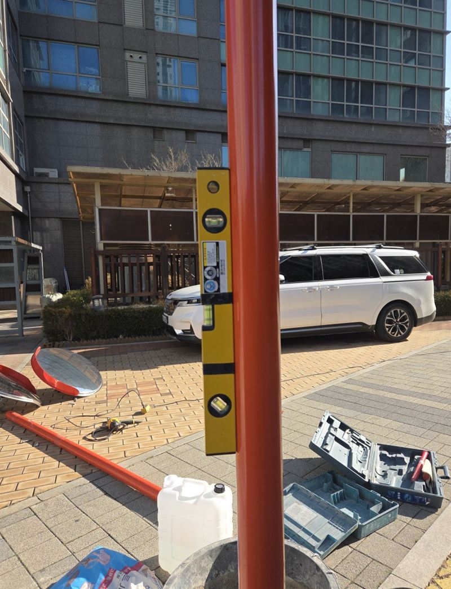
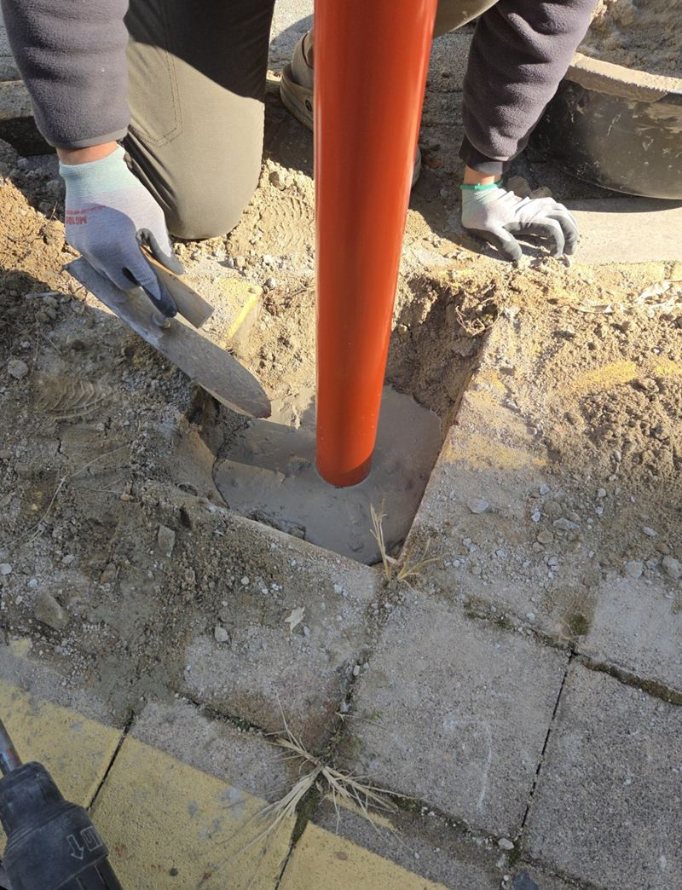
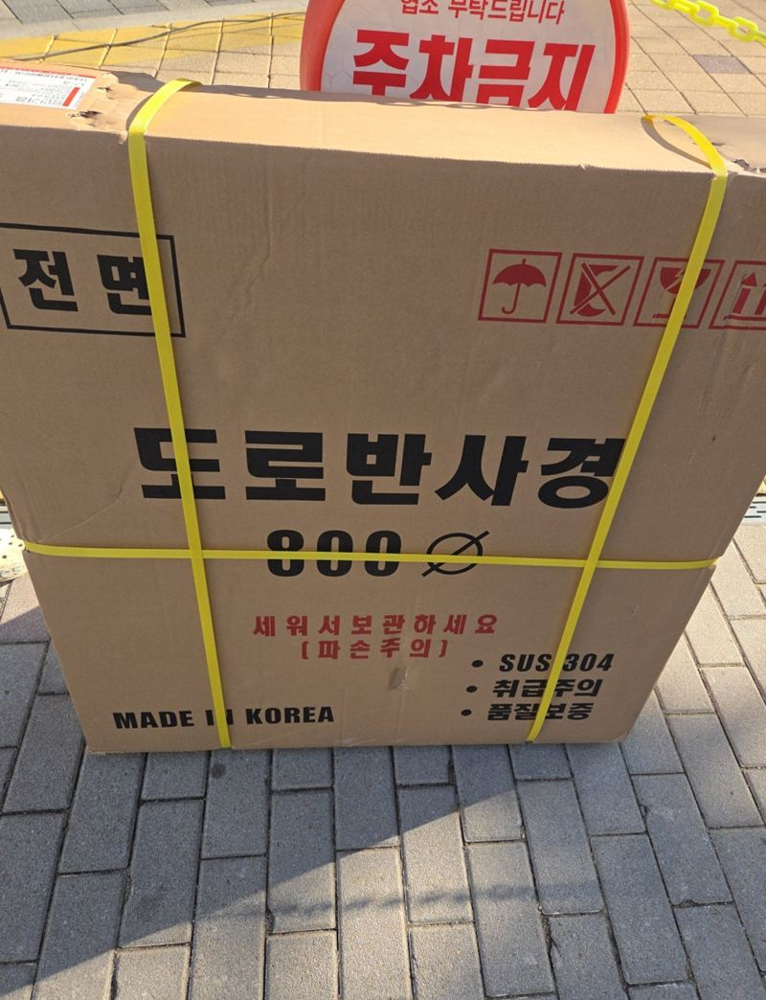
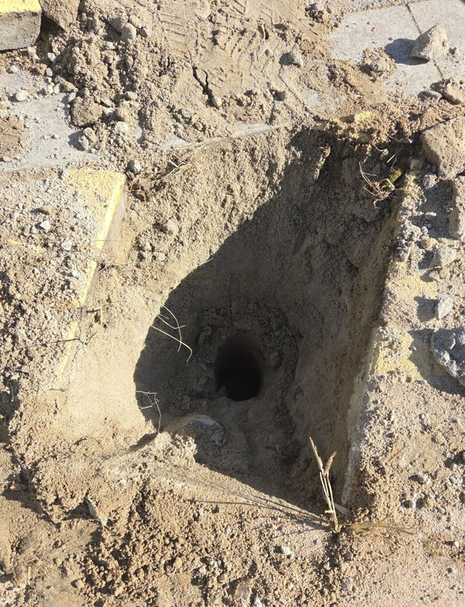
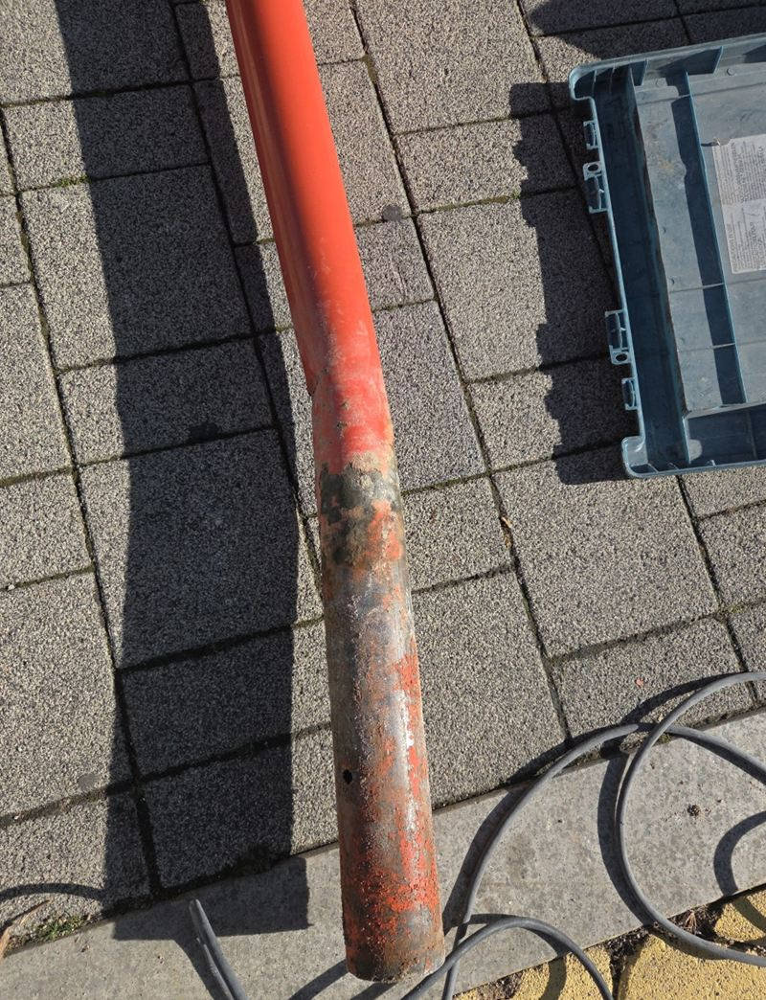

천안 볼록거울 반사경 기둥 휘어짐 교체 방법
← 밀어서 전후 비교 →
물류 차량이 후진하다 출입구 반사경을 쳤다는 연락이었어요. 처음엔 "거울만 깨졌다"고 하셨고, 기둥은 눈으로 보기엔 멀쩡했어요. 그런데 손으로 밀어 보니 아주 조금 흔들렸고, 결국 기둥까지 새로 세우는 작업이 됐어요.
| 현장 | 천안 불당동 건물 출입구, 매립식 반사경 2개 중 1개 |
|---|---|
| 처음 요청 | 깨진 거울만 교체 |
| 현장에서 찾은 것 | 기둥 하부 미세 유격, 땅속 철재 휨 |
| 한 일 | 블럭 걷기 → 몰탈 파쇄 → 지주 교체 → 블럭 복구 → 거울 각도 조정 |
겉은 멀쩡해도 아래가 휘어 있었어요
거울을 떼기 전에 고정 브라켓과 체결부, 기둥 아래 흔들림부터 봤어요. 매립식 반사경은 기둥 아래가 몰탈로 바닥에 묻혀 있어서, 차에 받힌 충격이 땅속 부분까지 전해져요. 지금은 작은 흔들림이라도 그대로 두면 바람과 진동에 점점 커지고, 기둥이 기울면 거울 각도도 같이 틀어져서 결국 사각지대를 못 비추게 돼요.


보도블럭을 들고 묻힌 기둥 빼내기
기둥 주변 보도블럭을 조심스럽게 들어내자, 단단히 굳은 몰탈이 나왔어요. 해머드릴로 몰탈을 깨서 기둥을 뽑아 보니 땅속 철재가 차에 받힌 방향으로 휘어 있었어요. 거울만 바꿨다면 새 거울도 비뚤게 서 있었을 거예요.


새 지주를 세우고 각도 맞추기
-
새 기둥 수직으로 세우기
새 지주를 구멍에 넣고 수평계로 앞뒤·좌우 기울기를 맞춘 뒤 몰탈로 다시 고정했어요.

-
보도블럭 복구
들어냈던 보도블럭을 기둥 둘레에 다시 맞춰 깔아 걸려 넘어질 틈이 없게 했어요.
-
거울 달고 각도 조정
새 볼록거울을 달고, 차가 나오는 방향에서 실제로 서서 반대편 차로와 보행자가 잘 보이는지 확인하며 각도를 맞췄어요.

반사경, 이럴 때 점검 받으세요
- 차에 한 번이라도 받혔어요겉이 멀쩡해도 아래가 휘었을 수 있어요. 손으로 밀어 흔들리는지 봐 주세요.
- 거울이 하늘이나 바닥을 비춰요기둥이 기울었거나 브라켓이 풀린 거예요.
- 거울이 뿌옇게 바랬어요오래된 거울은 비치는 모습이 흐려져요. 거울만 교체할 수 있어요.
- 기둥 밑 블럭이 들떴어요매립부가 흔들리고 있다는 신호일 수 있어요.
반사경 교체 질문
거울이 두 개 달린 반사경인데 하나만 바꿀 수 있나요?
기둥이 멀쩡하면 깨진 쪽만 바꿔요. 이 현장도 두 개 중 하나가 깨졌는데 기둥이 휘어 있어서 지주까지 바꿨어요.
사고 낸 차량 보험으로 처리할 수 있나요?
보험 처리에 쓰실 수 있게 작업 전후 사진과 작업 내용을 정리해 드릴 수 있어요.
매립식 말고 다른 방식도 있나요?
바닥 위에 앙카볼트로 고정하는 방식, 벽에 붙이는 벽부형도 있어요. 자리 여건을 보고 골라요.
작업 중 출입구를 막아야 하나요?
기둥 둘레만 작업해서 통행은 대부분 가능해요. 차량 동선을 피해 안전 표시를 해 두고 진행해요.
반사경 크기는 어떻게 고르나요?
도로 폭과 보이는 거리에 따라 달라요. 넓은 출입구일수록 큰 거울이 사각지대를 더 잘 보여 줘요.
새벽이나 야간에도 작업하나요?
차량 통행이 많은 곳은 한산한 시간에 맞추기도 해요. 출입 시간대를 알려주세요.
반사경 기둥 색은 왜 주황색이 많나요?
멀리서도 눈에 잘 띄게 하려는 거예요. 차량이 기둥을 보고 피할 수 있어서 출입구 쪽에는 눈에 띄는 색을 권해요.
오래된 반사경도 거울만 바꿀 수 있나요?
기둥과 브라켓이 튼튼하면 거울만 교체해요. 브라켓이 녹슬었다면 같이 바꾸는 게 좋아요.
다른 반사경·출차등 현장
반사경 전체와 기둥 아래쪽, 운전자 방향에서 본 모습을 찍어 보내 주세요.
전화 상담 010-4517-9872